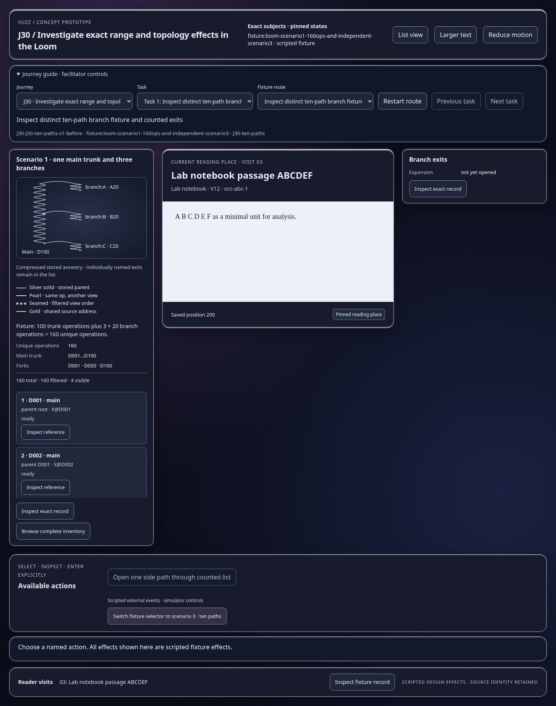
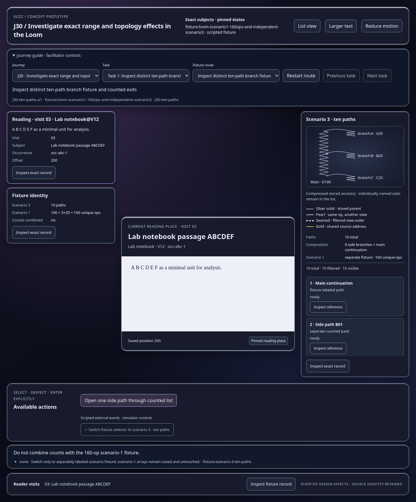
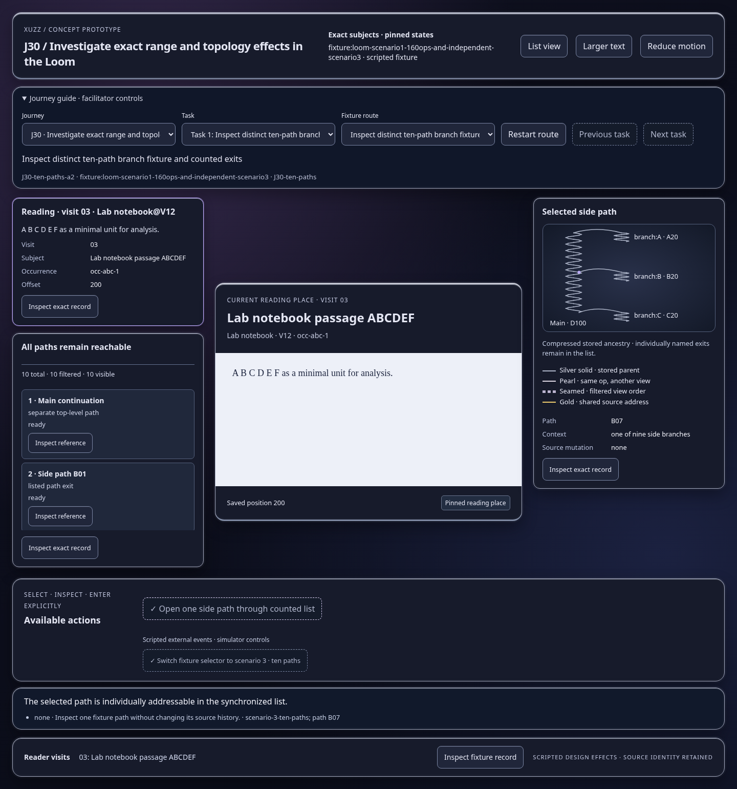

Scripted concept states; inspect the effect and identity trace. Images show actual prototype rendering.

Do not combine counts with the 160-op scenario-1 fixture.
Open this represented state
The selected path is individually addressable in the synchronized list.
Open this represented state